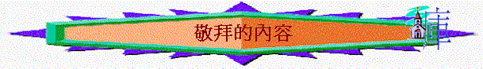

|
敬 拜 的 再 思 |
|||
|
敬拜的意義 |
敬拜的心靈 |
敬拜的內容 |
敬拜的方式 |
一.
誠實敬拜的意義
1.
天父的要求
「你們所拜的，你們不知道；我們所拜的，我們知道，因為救恩是從猶太人出來的。時候將到，如今就是了，那真正拜父的，要用心靈和誠實拜他，因為父要這樣的人拜他。」約4:22-23
〜撒瑪利亞人他們有宗教的表現，但他們對所拜的不知道，可能混雜了異邦人的文化、風俗，所以主回應人需要用誠實拜祂。
〜誠實(turth)可譯為真實、真理，人當知道所拜的是誰，當對神有真確的認識，否則將神的形像、本性，心意扭曲，就如外邦人敬拜偶像無異。
2.
世人的愚味
「保羅站在亞略巴古當中，說：「眾位雅典人哪，我看你們凡事很敬畏鬼神。我遊行的時候，觀看你們所敬拜的，遇見一座壇，上面寫著『未識之神』。你們所不認識而敬拜的，我現在告訴你們。」徒17:22-23
「因為，他們雖然知道神，卻不當作神榮耀他，也不感謝他。他們的思念變為虛妄，無知的心就昏暗了。自稱為聰明，反成了愚拙，」羅1:21-22
〜從起初神創造天地，人本來是知道，有真理認識祂，但人犯罪後，無知的心就昏味了，對神的真實否定，更扭曲，自以為聰明，將能朽壞的變為偶像，更敬拜他們所不知道的神，這不是真理性的敬拜，是無知，虛假的敬拜。
3.
悟性的平衡
「我若用方言禱告，是我的靈禱告，但我的悟性沒有果效。這卻怎麼樣呢？我要用靈禱告，也要用悟性禱告；我要用靈歌唱，也要用悟性歌唱。不然，你用靈祝謝，那在座不通方言的人，既然不明白你的話，怎能在你感謝的時候說「阿們」呢？」林前14:14-16
〜保羅教導哥林多教會，不是單重視靈，人在敬拜中靈裏感到熱烈，有很強感受，但沒有悟性，不知所敬拜的內容，所敬拜的對像是誰，旁人也不知他們敬拜，祈求，歌頌甚麼，既不能造就人，也不能令會眾可以同聲講「阿們」。
〜所以真正的敬拜，既要有心靈，同樣有悟性或在腦中有真確、真實的認知。
4.
真誠的阿們
「不然，你用靈祝謝，那在座不通方言的人，既然不明白你的話，怎能在你感謝的時候說「阿們」呢？」林前14:16
「耶和華以色列的神是應當稱頌的，從亙古直到永遠。阿們！阿們！」詩41:13
「耶和華以色列的神是應當稱頌的，從亙古直到永遠。願眾民都說：阿們！你們要讚美耶和華！」詩106:48
〜阿們的意思是「是的」「真實的」，人在敬拜中，若有悟性，認同敬拜的內容，知道自己所拜的是誰，心裏有敬服，自然「阿們」。
〜所以「誠實的敬拜」是父的要求，意思是人在敬拜中，要真知道所拜的是甚麼，心裏有真理，有真實的知道，心口一致的誠心讚美神，這樣的敬拜是神所喜悅的。
二..認識所拜的途徑
1.
觀看穹蒼大地
「（大衛的詩，交與伶長。）諸天述說神的榮耀；穹蒼傳揚他的手段。」詩19:1
「自從造天地以來，神的永能和神性是明明可知的，雖是眼不能見，但藉著所造之物就可以曉得，叫人無可推諉。」羅1:20
〜停一停，看一看神所造的天地，人心裏自然體會，確信神的偉大，也能發出真誠的讚美
2.
默念真神作為
「我要提說耶和華所行的；我要記念你古時的奇事。我也要思想你的經營，默念你的作為。
神啊，你的作為是潔淨的；有何神大如神呢？你是行奇事的神；你曾在列邦中彰顯你的能力。」詩77:11-14
3.
祈求聖靈開啟
「求我們主耶穌基督的神，榮耀的父，將那賜人智慧和啟示的靈賞給你們，使你們真知道他。」弗1:17
「因此，我們自從聽見的日子，也就為你們不住的禱告祈求，願你們在一切屬靈的智慧悟性上，滿心知道神的旨意；好叫你們行事為人對得起主，凡事蒙他喜悅，在一切善事上結果子，漸漸的多知道神。」西1:9-10
〜神的靈是給我們智慧，能開啟我們的心靈，更真知道祂的旨意，祂自己
4.一同明白神愛
「求我們主耶穌基督的神，榮耀的父，將那賜人智慧和啟示的靈賞給你們，使你們真知道他，並且照明你們心中的眼睛，使你們知道他的恩召有何等指望，他在聖徒中得的基業有何等豐盛的榮耀；並知道他向我們這信的人所顯的能力是何等浩大，」弗3:17-19
〜主不是要我們一人走天路，也不是單要我們在家中個人崇拜，記念主就可以，神要我們一同聚會，透過分享、生命交通、祈禱，更深明白主自已，明白主的愛。
4.
研讀神的聖言
「因為主的道從你們那裡已經傳揚出來。你們向神的信心不但在馬其頓和亞該亞，就是在各處也都傳開了；所以不用我們說什麼話。因為他們自己已經報明我們是怎樣進到你們那裡，你們是怎樣離棄偶像，歸向神，要服事那又真又活的神，等候他兒子從天降臨，就是他從死裡復活的，那位救我們脫離將來忿怒的耶穌。」帖前1:8-10
「直等到我們眾人在真道上同歸於一，認識神的兒子，得以長大成人，滿有基督長成的身量，」弗4:13
〜神的話能使人認識祂，認識神的兒子，知道自己以前所拜的虛無，認識現在所敬拜的才是又真又活的神
〜而神的話----聖經怎樣令我們更深知道祂。
三.聖經對神的描述
1.從築壇的名稱認識祂敬服祂
A.伊利伊羅伊以色列(神以色列神)------神是我的神
「雅各從巴但亞蘭回來的時候，平平安安的到了迦南地的示劍城，在城東支搭帳棚，就用一百塊銀子向示劍的父親、哈抹的子孫買了支帳棚的那塊地，在那裡築了一座壇，起名叫伊利伊羅伊以色列（就是神、以色列神的意思）。」創33:18-20
〜對於雅各來說，他一生飄泊，用自己的方法尋找理想，前半生只承認神是他父他列祖的神，認不以神為神。
〜但經過被騙，經過作苦工，經過平安回到迦南，他不得不承認神是一值眷顧他，一值保守與他所立的約，令他平安回到家鄉。
〜所以由經歷，引致不得不尊敬，不承認神是以色列(雅各的另一個稱呼)，真是他的神，以此築壇一生尊崇祂。
〜若我們回顧自己一生，真經歷神的同在，守約眷顧，也不能不像雅各，真發現「神是我的神」，真是「我的神」，從心裏發出真實的讚美！
B.耶和華尼西(耶和華是我旌旗)----神是我們的勝利
「那時，亞瑪力人來在利非訂，和以色列人爭戰。摩西對約書亞說：「你為我們選出人來，出去和亞瑪力人爭戰。明天我手裡要拿著神的杖，站在山頂上。」於是約書亞照著摩西對他所說的話行，和亞瑪力人爭戰。摩西、亞倫，與戶珥都上了山頂。摩西何時舉手，以色列人就得勝，何時垂手，亞瑪力人就得勝。」出17:8-11
「摩西築了一座壇，起名叫「耶和華尼西」（就是耶和華是我旌旗的意思），又說：「耶和華已經起了誓，必世世代代和亞瑪力人爭戰。」」出17:15-16
「我願男人無忿怒，無爭論（或作：疑惑），舉起聖潔的手，隨處禱告。」提前:2:8
〜以色列人出埃及後，要面對亞瑪力人，他們來到利非訂與選民爭戰。
〜摩西在這場戰役中，深體會，幾時舉手仰望神，靠神的力量，幾時就得勝，不可將手放鬆，體會儆醒呼求的重要。
〜因此他築了一座壇起名叫耶和華尼西，得勝在乎神，神是得勝的關鍵，並非人的力量。
〜若我們深經歷禱告的能力，在屬靈爭戰中，神使人得勝，我們也會像摩西一樣，築壇敬拜神，神是佩得的！
C.耶和華沙龍(耶和華賜平安)----神是賜平安的神
「基甸見他是耶和華的使者，就說：「哀哉！主耶和華啊，我不好了，因為我覿面看見耶和華的使者。」耶和華對他說：「你放心，不要懼怕，你必不至死。」於是基甸在那裡為耶和華築了一座壇，起名叫「耶和華沙龍」（就是耶和華賜平安的意思）。（這壇在亞比以謝族的俄弗拉直到如今。）」士6:22-24
〜基甸曾經對主沒信心，也不肯作士師拯救選民，但他卻在一日見到神的使者，他覺得自己如比軟弱的人來到神的使者面前必死，但很奇妙，神卻親自安慰他，要他放心，不懼怕。
〜軟弱的人經歷神的親自安慰與保證後，他築了一座壇名耶和華沙龍，神真是賜人平安，不單內心的平安，肉身也有平安(不死)。
〜我們人生或許也有軟弱、小信、懼怕，但若經歷過主親自的安慰、保證，在危難中的安然渡過，我們也從內心表達出誠實的讚美，神真是賜平安的神。
2.從神僕的頌讚認識祂讚美祂
A.
大衛的頌讚----至大奇妙的神
「主啊，諸神之中沒有可比你的；你的作為也無可比。主啊，你所造的萬民都要來敬拜你；他們也要榮耀你的名。因你為大，且行奇妙的事；惟獨你是神。」詩86:8-10
a.無可比、至大的神
〜大衛人生有很多逃難的時候，他去過很多地方，見過偶像，也見過不同的偉人，將領(如巨人哥利亞)他深發現，惟有神才是至大的，世上的神像，人物也不及祂。
〜不知我們有否大衛的經歷，見過很多偉人、英雄，地位崇高的人物，見過不同的偶像，有否深深確定「諸神之中，沒可比祢的，惟獨祢是神！」
b.行奇妙的事之神
〜大衛曾經遇過獅子、哥利亞、掃羅、很多戰役，死蔭幽谷，他真體會到這些事的經過，不是自然、幸運地經過，而是有神奇妙的作為，奇妙的保守，神真是獨行奇妙的神。
B.保羅的頌讚----賜予恩典的神
「願頌讚歸與我們主耶穌基督的父神！他在基督裡曾賜給我們天上各樣屬靈的福氣。」弗1:3
〜保羅在悟性上，認識救恩，從認識救恩----神的永恆計劃中，他發出頌讚，而弗1:3-14的頌讚，重點是神賜各樣屬靈的福氣，祂是恩典福氣的計劃者、源頭，也樂意賜給信祂的人
a.
揀選的恩典
「就如神從創立世界以前，在基督裡揀選了我們，使我們在他面前成為聖潔，無有瑕疵。」1:4
b.
名份的恩典
「又因愛我們，就按著自己意旨所喜悅的，預定我們藉著耶穌基督得兒子的名分。」1:5
c.
赦罪的恩典
「使他榮耀的恩典得著稱讚；這恩典是他在愛子裡所賜給我們的。」1:6
d.
得業的恩典
「我們也在他裡面得（得：或譚成）了基業；這原是那位隨己意行、做萬事的，照著他旨意所預定的，叫他的榮耀從我們這首先在基督裡有盼望的人可以得著稱讚。」1:11-12
〜若一個基督徒深體會自己白白蒙恩，今日將來所得的恩典是神藉愛子賜予的，而這恩典不是因為我們為主作了其麼，而是很早已預定的，是神賜給我們的，我們也向神發出頌讚
3.從天上的敬拜認識祂敬拜祂
A.
活物的表達 → 永在全能者
「四活物各有六個翅膀，遍體內外都滿了眼睛。他們晝夜不住的說：聖哉！聖哉！聖哉！主神是昔在、今在、以後永在的全能者。」4:8
a.神聖主宰
〜以賽亞書6章，撒拉弗見了主時，不其然說了三聲聖哉，隔了很多年後，至新約啟示錄，四活物見主時，同樣三聲聖哉，神的神聖仍不因年日、使者而改變，仍然是何等聖哉，天使侍候神這麼多年，仍要晝夜不住說神的神聖。
b.永在真神
〜天使印證一件事實，神從昔日至今仍是活著的，以後更永在的。
c.全能者
〜活物遍體內外滿了眼睛，牠比人更能看透事情，這麼多年在神身邊，牠真看透神是無所不能，全能的神
＊
永在全能的神要成就祂永恆計劃、時間、勢力根本不可攔阻祂的工作！
B.長老的反應
→ 萬物掌權者
「每逢四活物將榮耀、尊貴、感謝歸給那坐在寶座上、活到永永遠遠者的時候，那二十四位長老就俯伏在坐寶座的面前敬拜那活到永永遠遠的，又把他們的冠冕放在寶座前，說：」4:10-11
a.俯伏在地
〜長老代表得勝者，坐在寶座旁邊，有權審判列國，位份何等高，但見了神時，仍俯伏在地，因神才是真正至高掌權者
b.放下冠冕
〜冠冕代表榮耀、權柄、位份、但長老見到坐寶座者仍要放下、將最高尊貴、權柄歸給神
c.共同稱頌
〜他們稱頌神，將最高權柄，尊貴歸給祂，因祂創造了萬物，按長者的經歷(人世間)的苦難，他們更深發現萬事萬物都是按神按旨意而有的，萬事非偶然，在神旨意，神的掌握中！
C.
萬物的和應 → 配得榮耀者
a.天使的和應
「我又看見且聽見，寶座與活物並長老的周圍有許多天使的聲音；他們的數目有千千萬萬，大聲說：曾被殺的羔羊是配得權柄、豐富、智慧、能力、尊貴、榮耀、頌讚的。」5:11-12
〜從主被殺，得勝，救恩的工作，更反映主配得!
(1)權柄
〜死，罪權柄也要征服!(歷世歷代最難征服的)，主有何等權柄！
(2)豐富
〜在人看來主是貧窮的(在世)，但祂的死，卻帶來聖徒生命，身份，地位上的豐富
(3)智慧
〜用人看為愚拙的方法----釘死，成就浩大工程，這是主的智慧！
(4)能力
〜將人從世界，魔鬼，罪中拉出來，這是主的能力
(5)尊貴
〜祂順服至死，神卻將祂升為至高
(6)榮耀
〜祂現坐在神的右邊，祂的身份及祂所作的工是何等榮耀
(7)頌讚
〜令天使佩服的不單是主的本質，更是主所作的，至高的主，竟然願下人間，成為羔羊，被殺，用此順服卑徵之法救世人，天使也不能這樣做到，值得稱讚！
b.萬物的阿們
「我又看見且聽見，寶座與活物並長老的周圍有許多天使的聲音；他們的數目有千千萬萬，大聲說：曾被殺的羔羊是配得權柄、豐富、智慧、能力、尊貴、榮耀、頌讚的。」5:13-14
〜至最後，萬物(無論是靈界，物質界的)都要將最高榮耀，權柄歸給天上二位主角----坐寶座的和羔羊，他們也要同聲說阿們！因神是配得榮耀的!
D.
淫婦的被罰 → 真實公義者
「此後，我聽見好像群眾在天上大聲說：哈利路亞（就是要讚美耶和華的意思）！救恩、榮耀、權能都屬乎我們的神！他的判斷是真實公義的；因他判斷了那用淫行敗壞世界的大淫婦，並且向淫婦討流僕人血的罪，給他們伸冤。又說：哈利路亞！燒淫婦的煙往上冒，直到永永遠遠。那二十四位長老與四活物就俯伏敬拜坐寶座的神，說：阿們！哈利路亞！」19:1-4
〜當巴比倫受審判時，天上有讚美耶和華(哈利路亞)的聲音，讚美神的公義、判斷何其真實。
總結：當我們真知道祂，在悟性滿心認識祂的時候，我們的敬拜更真實，更能真